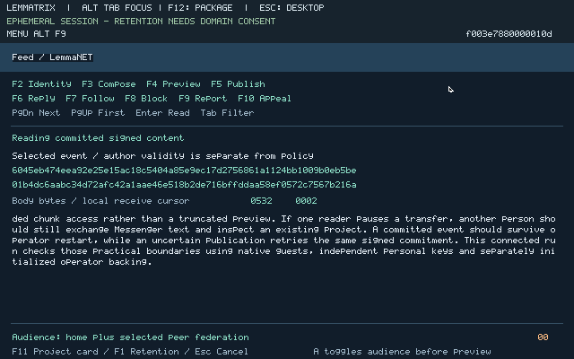

The implementation adds an installable native Feed, independent author/account owner, native scoped signing, durable federation event/content storage, explicit replication, project handoffs, moderation/appeals and approved personal retention. Relays, terminal services and Mailbox now admit bounded independent clients and replenish listeners without per-client operator stop/listen handoffs. Existing Messenger and Forge use that shared native infrastructure.
Fresh final connected execution is in progress. The clean image is 854253bc6b0d46ba043e6056ea8c065b00d4e8560b062d6f6f9220034f76a29b, with UI 0.9.2 and federation/account 0.9.1 packages. The fresh run has passed three concurrent Feed clients with two sharing Alpha, and its first native UI-authored short post crossed Alpha/Beta with identical original signed bytes. The earlier image’s core, reconnect and retained-account recovery passed; its project action remained unqualified. That trial was retired with its observations and backing preserved. A second partial trial verified an actual Fork, lineage and post-Fork export, then exposed a project-follow label defect and equal-sequence Registry revocation. Those observations are preserved; the fresh nine-guest execution qualifies the corrected packages together.
This branch builds on unmerged draft PR #4, head 4d4bde6415ae1925d030dfb2c4644275f23d3606. Draft PR #5 targets that branch. Neither PR is merged by this campaign. The 28 October governing specification and release charter remain intact.
./lt build --clean
cp build/live/guest.bin build/campaign009-final-v5.bin
./lt feed package --publisher-private tests/keys/development-rsa.pem --account-parent 4388f30ab958b655f441b6ff8675cfc53fb55a8d7075d6830a96804724e10f73 --federation-parent 5bb8adb18e7161203a9eec7d6ffebf7ac1e7a0c510f8d74b652642f91c7b9686 --ui-version 0.9.2 --ui-parent 7b27f63fbd50389f094714d7b675bab5c1a845dba78da36cf7d15660f3836621 --output build/campaign009-final-v7-feed
./lt messenger package --publisher-private tests/keys/development-rsa.pem --output build/campaign009-final-v3-messenger
PYTHONPATH=tools python3 - <<'PYREGISTRY'
import live_build
print(live_build.app('Guest.Registry', 'Guest.Registry.main', 'campaign009-registry-final-v4', 2))
PYREGISTRY
Use the native Feed guide for standalone personal/federation commands, relay enrollment, explicit mode 3 replication, moderation and sealed recovery. Commands continue to work after an acceptance controller exits. The checked-in RSA development publisher is the disclosed existing package/project bootstrap; it signs no Feed author event, moderation event or replication identity.
PYTHONPATH=tools python3 tests/native_community_campaign.py \
--image build/campaign009-final-v5.bin \
--feed-packages build/campaign009-final-v7-feed \
--messenger-ready build/campaign009-final-v3-messenger/ready.json \
--registry build/live/apps/campaign009-registry-final-v4.bin \
--public-graph tests/fixtures/campaign008-existing-forge-closure.json \
--publisher tests/fixtures/campaign008-existing-forge-publisher.pub \
--output build/campaign009-connected-v4 --mixed --replication-auto-renew
# Preserve these native actors for the connected continuations:
PYTHONPATH=tools python3 tests/native_community_reconnect.py --attach build/campaign009-connected-v4 --feed-packages build/campaign009-final-v7-feed
PYTHONPATH=tools python3 tests/native_community_commit_retry.py --attach build/campaign009-connected-v4
PYTHONPATH=tools python3 tests/native_community_capacity.py --attach build/campaign009-connected-v4 --refusal-timeout 1500
PYTHONPATH=tools python3 tests/native_feed_project_account.py --attach build/campaign009-connected-v4 --stage project
PYTHONPATH=tools python3 tests/native_community_policy_restart.py --attach build/campaign009-connected-v4 --feed-packages build/campaign009-final-v7-feed --stage moderation
PYTHONPATH=tools python3 tests/native_community_policy_restart.py --attach build/campaign009-connected-v4 --feed-packages build/campaign009-final-v7-feed --stage restart --resume
# Last: select the original federation offline for the approved hosting move.
PYTHONPATH=tools python3 tests/native_feed_project_account.py --attach build/campaign009-connected-v4 --stage migrate --alpha-offline-approved
The final clean source reproduction passed after all measured native fixes. Its common image, all nine ordinary packages and corrected Registry are byte-identical to the artifacts selected for the running community. This reproduction does not turn pending runtime steps into completed acceptance.
The machine record identifies exact package paths, hashes, release IDs and the ready-manifest mapping. The checked-in project archive and publisher are byte-identical preserved evidence of the existing signed release, not authored Feed history. Reproduction output directories must be fresh. Controller resumption checks the same image, packages and full live incarnations; a real restarted operator requires fresh native recovery/authorization. Host controllers supply input, public configuration, opaque devices and deliberate availability faults. They do not author signed social state, choose hidden moderation outcomes or perform replication.
The earlier 582f4d24… common-image trial admitted all three personal Feed clients concurrently through the same relays, with two sharing Alpha. Seventeen native UI-authored events from all three authors match original signed bytes across Alpha/Beta, including the useful 1330-byte post, independent native read/follow and cross-federation reply. Alice and Bob then independently joined the same Mailbox while Charlie's Feed transfer was paused. Actual Messenger text and reply decrypted in 52.44 and 30.59 seconds respectively under the recorded nine-guest load; The actual received project reference then completed routed Forge inspection with fields [0,6,2,0,1,0,1,1], preserving signature/admission checks. Cancelling and dropping Charlie preserved both unrelated authenticated Messenger sessions. Charlie remained paused for 1368.40 seconds across controller repairs; this span is not an operation throughput claim. The project, restart and account continuations remain pending.
The connected reconnect continuation passed. Both federations reread the earliest, long and latest original content from 17 events occupying 9728 padded content bytes, beyond the separate 4096-byte verified read page. A required-mode-1 route failure remained visible without direct fallback. After deliberately losing the final receipt for a 989-byte publication, a fresh approved context retried its exact signed event: each federation retained one visible copy, with unchanged author usage of 10 events/3553 bytes. A separate exact duplicate admission preserved the full positive durable byte/work/allocation tuple. Replacing the no-vault author owner/UI left the fresh native Feed without an identity while recipient copies remained readable.
The long qualification exposed actual finite replication-grant expiry twice. Explicit unchanged-policy renewal spent another 1 MiB allocation each time from each operator's same persisted 16 MiB total, leaving event reservations and policy hashes unchanged. Replication resumed without resetting personal clients. That earlier manual policy did not automatically renew expired authority. The final federation package adds explicit rolling consent: native code may charge another allocation from the same persisted finite total, preserving policy/event reservations. Actual two-operator rollover, exhausted-pool latching, legacy manual refusal and peer-revocation failure are recorded separately in the native rolling-policy evidence. During a controller interruption, the old Beta administrative submit lost its token before host code received it; native service traffic continued. The controller uses that incarnation's existing synchronous authorized management path until planned restart. The host CLI now acquires the exact token across SIGINT before cancellation; its focused signal test passed.
An earlier clean static rebuild reproduced image 582f4d24d94874898e0bba18c98ef04d91e969f14aaf1ca0678c5152f50ae6f2. Fresh ordinary compilation reproduced all four Feed packages, all five Messenger packages and the admitted 97,180-byte Registry exactly. An isolated actual native service also accepted one valid signed event, reconciled its exact duplicate, refused a different valid same-author sequence with 12, and refused a valid next event at its configured one-event quota with 4. The original signed event and checked content remained readable; this boundary probe is separate from UI-authored community history.
Development checks admitted three personal clients through the same three native relays and Mailbox. Three uploads coexisted; two clients committed/reconciled/read while the first stalled. Correct bearer material from a foreign context was refused. Setup took 254.47 seconds and the two useful commits/reads took 34.70 seconds under the recorded local VM load. Actual graphical Messenger text/reply and a routed existing Forge inspection subsequently completed during another client stall. These segmented development runs preserve their original images and package replacements.
A native 97-byte post and useful 1245-byte post crossed separately configured Alpha/Beta services with identical original 480-byte signed envelopes and checked content. A Beta reader followed locally and replied across the permitted audience. A real 1649-byte card carried original signed Registry/project evidence. A private report, native authorized hide, author appeal and signed reversal completed in 77.96 seconds in the final continuation, preserving Alpha's independent view and a user's local block.
An actual federation cold restart recovered its original native node certificate, moderator public identity with a fresh generation, eight committed events, checked long content, moderation reversal and replication checkpoint. Spent transport allocation remained charged; the final recovery took 175.25 seconds. That identified component did not exercise a newly pending outgoing event across two final-image peers, so the connected restart continuation is still required.
The signer probe independently verified native Ed25519 output and refused substituted audience/content/kind, consumed approval, wrong role/scope and legacy administrative Feed-signing bypass. Actual storage checks preserved a partial writer while independent reads proceeded; role 6 roots recovered after restart and dead empty namespaces were reclaimed with fresh handles. Installed AArch64 namespace/IPC/block checks passed on the earlier 582f image in 17.65 seconds the earlier 90fd image in 64.31 seconds, and the current 8542 image in 58.25 seconds under qemu-aarch64. A longer 13,422-byte interleaved read/write check also passed on its identified earlier image; it is not a full installed Feed/Messenger qualification.
Retention testing found a real partial-recovery bug: clearing scratch replaced the signer response-length value before checking it. The corrected native owner restored the same author, sequence and exact pending event through two fresh authorizations, signer generations 2→3 and committed record roots 3→4. Recovery remains visibly reconciliation-required. Public profile import restores approved references/preferences under separately approved destination identity; it does not claim a certified cross-identity link.
The first final-image attempt exposed a long-running listener bug: acceptance reused the original idle listener setup deadline, so a later client was immediately timed out. Relay2 reported 51 and Alice/upstream 38; Charlie remained admitted in phase 3. That failed attempt, image and controller segments remain identified. Acceptance must use the corrected listener lifecycle and a newly identified image.
A prepublication check also found a real status-wire defect: the owner copied 96 payload bytes after a 64-byte header but advertised 96 total, while the UI required 160. The fixed 0.9.1 owner reports the complete 160 bytes. An isolated native SDK consumer and real graphical F2/export check passed on the common image. The connected continuation replaces only unused personal Feed owners/UI through normal package admission and fresh scoped personal routes; no accepted Feed event or operator service is reset.

The actual project continuation caught an excessive delegation request: Feed held 31 rights on the new Fork root but requested 127. Objects refused that request. UI 0.9.1 now delegates its actual 31 rights. Graph ownership also exhausted the wrong ordinary-record subquota, preventing account export after Fork. The 200-byte Objects fix preserves the aggregate 24-record/1 MiB limit while counting ordinary records against their own eight-record/256 KiB subquota. Installed rights799 probes passed all seven boundary/commit/read/reclamation cases on QEMU in 7.08 seconds and emulated AArch64 in 215.86 seconds. They use uncommitted graph reservations; the actual Fork subsequently passed in the identified partial 90fd trial, along with visible Library lineage and post-Fork export. Its project-follow preference was correct but mislabeled; UI 0.9.2 distinguishes project follow/unfollow. Registry revocation now advances beyond the latest verified decision for the exact listing, even when imported decisions did not advance its local authoring counter. An installed two-verifier regression passed: a fresh importer issued sequence 2 over original sequence 1, refused the old admission with 3, and kept the original bytes unchanged at the independent verifier. The fresh connected run must also verify the card action refusal.
The deliberate extension provides 15 process slots/eight ordinary slots, six service roles and 96 exact operation grants. Ordinary code remains 256 KiB with 2 MiB arenas and 16 KiB stacks. Network is 392,820 bytes within its 384 KiB built-in profile; Feed UI 176,848, account 145,376 and federation 167,516 bytes each fit ordinary packages. The machine contract records disjoint mappings and the Vault 416 KiB built-in profile.
Sixteen transport channels partition into 12 routed and 4 bulk channels. A relay needs an incoming/outgoing pair: six is a bound, while three concurrent personal clients were actually observed. Sixteen terminal banks carry independent keys/counters/fragments/owned tokens; one finite IPC dispatch lane is fairly shared. Mailbox has four 8 KiB stages and one durable writer. Feed has four 16 KiB stages, seven 128 KiB content segments, a 37,888-byte index,64-event/896 KiB total allowance and 16-event/256 KiB per-author allowance. Its 128 KiB segment buffer is writer workspace; ordinary reads use ServerStore's separate 4 KiB verified page.
Replication commits at most 1 MiB of transport allocation before issuing a Network grant, from a finite selected total of at most 16 MiB. Unused allocation is burned after restart. Each outgoing event reserves its whole worst-case byte/work allowance; each of at most nine attempts is durably recorded before transmission, with at most 128 polls per attempt. A duplicate cannot renew its event reservation. Personal mode 1 and explicit inter-operator mode 3 have separate authority and scheduling; there is no direct privacy fallback.
The final source independently bounds a partial terminal frame and admitted IPC token to 10000 work ticks, and handshake/whole queued request to 100000. Healthy idle authenticated contexts remain reusable. Expiry cancels the exact owned token, wipes only the matching working/saved bank and retires its channel epoch and dependent pair. A compiled native state fixture exercises cancellation, stale epochs, selected-bank wiping and unrelated-pair preservation on RV64 and emulated AArch64; it is separate from installed wire admission. A full six-route wire saturation journey remains unqualified.
Source proofs concern predicates actually used for stage ownership, signed scope, budget reservations, local-block visibility, recovered generations and dead-owner reclamation. They do not prove the compiler, devices, cryptographic implementation, complete imperative state machine or shipped binary. The machine record names those predicates without inflating a theorem count.
| Requirement | Concrete progress and limit |
|---|---|
| NET-001/003/004/005 | Typed signed events, scoped identities, broker-only mode 1 clients, separately authorized mode 3 replication, deduplication and independent moderation. Local three-hop evidence does not establish Internet-scale anonymity or interoperability. |
| FEED-001/002 | Native short/long posts, replies, local follows/filter/block, reports/appeals and original signed-release cards with current existing project checks. The full media/activity/action roadmap is not complete; unsupported economic and execution actions remain unavailable. |
| FEED-003/004 | Typed retained publishing state, approved public portable objects and federation-specific signed policy; no mandatory global index/share deployment. Private remote-home appeals, encrypted private portable export and certified cross-identity continuity remain unsupported. |
| DAT/SDK, VAULT-001/002/003/004, SRV-001/002/003/004 | Existing project signature/lineage/admission paths, typed native SDKs, distinct Objects 3/Feed and Messenger 2 authority, durable operator content/policy/budgets and finite voluntary services. Hardware loss, whole-store freshness, broad server roles and complete recovery/key-rotation obligations remain open. |
| RG-07/RG-11 | Development executions cover signed discussion/replication, Messenger project references and block/appeal; the final project continuation is still pending. No full gate completion is asserted; small private Messenger groups and the complete discover/build/sign/admit/seed/install flywheel remain obligations. |
All evidence is one-host local integration. Native x86-64 is an RV64 interpreter; AArch64 is emulated. Independent administration, physical hardware/power loss, side channels, external freshness and independent security review remain unqualified. Classical cryptography is not post-quantum; these tests do not establish Tor interoperability, global correlation resistance or hostile-government resilience. Services remain voluntary and zero-price. Future economic design still must make self-retrieval/colluding self-seeding net-negative at coalition level; this increment invents no balance or fee formula.